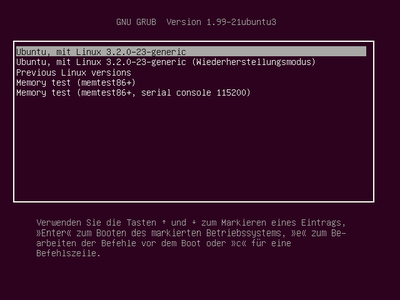
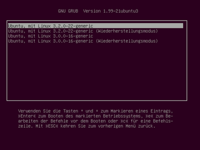

Kernel
Dieser Artikel wurde für die folgenden Ubuntu-Versionen getestet:
Ubuntu 16.04 Xenial Xerus
Ubuntu 14.04 Trusty Tahr
Zum Verständnis dieses Artikels sind folgende Seiten hilfreich:
 Aus der Wikipedia: Ein Betriebssystemkern oder Systemkern (englisch kernel [ˈkɝːnəl]) ist der zentrale Bestandteil eines Betriebssystems. In ihm ist die Prozess- und Datenorganisation festgelegt, auf der alle weiteren Softwarebestandteile des Betriebssystems aufbauen. Er bildet die unterste Softwareschicht des Systems und hat direkten Zugriff auf die Hardware. Gängige Anforderungen an einen Systemkern sind Parallelverarbeitung verschiedener Aufgaben (Multitasking), Einhaltung zeitkritischer Grenzen, Offenheit für unterschiedlichste Anwendungen und Erweiterungen.
Aus der Wikipedia: Ein Betriebssystemkern oder Systemkern (englisch kernel [ˈkɝːnəl]) ist der zentrale Bestandteil eines Betriebssystems. In ihm ist die Prozess- und Datenorganisation festgelegt, auf der alle weiteren Softwarebestandteile des Betriebssystems aufbauen. Er bildet die unterste Softwareschicht des Systems und hat direkten Zugriff auf die Hardware. Gängige Anforderungen an einen Systemkern sind Parallelverarbeitung verschiedener Aufgaben (Multitasking), Einhaltung zeitkritischer Grenzen, Offenheit für unterschiedlichste Anwendungen und Erweiterungen.
Den von Linus Torvalds und vielen anderen entwickelten Linux-Kernel gibt es in verschiedenen Varianten. Hauptsächlich sind dies:
Desktop-Kernel oder generischer Kernel
Kernel für virtuelle Maschinen
Echtzeitkernel
Bis einschließlich Ubuntu 11.10 hat es zudem einen Serverkernel gegeben, seit Ubuntu 12.04 wird der generische Kernel ebenfalls für Server verwendet. Außer dem generischen Kernel hat nur noch der Echtzeitkernel bei Spezialanwendungen wie z.B. einem Tonstudio eine gewisse Bedeutung.
Kernel installieren¶
Bei der Installation von Ubuntu wird automatisch ein Kernel installiert, denn ohne diesen wäre das ganze System nicht lauffähig. Unter Ubuntu werden Kernel wie normale Software über die Paketverwaltung installiert [1]. Die entsprechenden Paketnamen heißen immer
linux-image-VERSION-ABINUMMER-VARIANTE
bzw. als konkretes Beispiel
linux-image-4.4.0-47-generic
Dennoch sollte man einen Kernel besser über ein Metapaket wie
linux-generic
installieren, denn nur so wird gewährleistet, dass bei einer Systemaktualisierung ("Update") neben dem Kernel automatisch die passenden Module und Kernel-Header-Dateien installiert werden. Bei der Installation eines Kernels wird dieser ebenfalls automatisch in den Bootmanager GRUB 2 bzw. GRUB eingetragen, so dass beim nächsten Rechnerstart die neueste Kernel-Version gebootet wird.
Kernel neu installieren¶
Unter Umständen kann zur Reparatur des aktuell laufenden Kernels eine Neuinstallation nötig sein. Dies erfolgt einfach über den Befehl:
sudo apt-get install --reinstall linux-image-$(uname -r)
Kernel deinstallieren¶
Hinweis:
Bei einer Aktualisierung des Kernels wird der alte Kernel niemals automatisch entfernt. Dadurch ist es möglich, noch mit dem Vorgänger-Kernel zu booten, falls es zu Problemen mit dem neueren Kernel kommen sollte.
Durch automatische Systemaktualisierungen (Updates) werden fehlerbereinigte Versionen des Kernels auf dem System installiert. Dies erkennt man z.B. beim Booten des Systems an mehreren Einträgen in GRUB 2. Seit Ubuntu 11.04 muss man das Untermenü "Previous Linux versions" auswählen, um weitere bzw. ältere Kernel angezeigt zu bekommen. Das sieht dann beispielsweise so aus:
|  |
| GRUB 2 Hauptmenü |
|  |
| Untermenü für ältere Kernel |
Beim Vergleich der linken und der rechten Abbildung erkennt man, dass neben dem neuesten Kernel 3.2.0-23-generic noch zwei ältere Kernel im System vorhanden sind: die Versionen 3.2.0-22-generic und 3.0.0-16-generic. Will man also im obigen Beispiel den älteren Kernel 3.0.0-16-generic und die Header-Dateien deinstallieren, so sucht man in der Paketverwaltung [1] nach den Paketen
linux-image-3.0.0-16
linux-headers-3.0.0-16
und deinstalliert sie. Dabei werden auch automatisch alle zugehörigen Kernel-Module entfernt, ebenso der Eintrag in den Bootmanagern GRUB 2 und GRUB, um diesen Kernel zu booten. Da das bei Ubuntu und Xubuntu übliche Software-Center alte, nicht mehr benötigte Kernel nicht anzeigt, installiert man für diese Aufgabe entweder die grafische Paketverwaltung Synaptic oder verwendet apt-get in einem Terminalfenster:
sudo apt-get remove --purge linux-image-3.0.0-16-generic linux-headers-3.0.0-16
Weitere Möglichkeiten¶
Betreibt man ein Ubuntu-System über einen längeren Zeitraum, so sind in der Regel mehrere Kernel-Versionen vorhanden. Da ein Kernel zusammen mit Header-Dateien und Kernel-Modulen einiges an Platz auf der Festplatte belegen kann (ca. 200 MiB), sollte man im Rahmen der Systempflege bei Gelegenheit ältere Kernelversionen, die man nicht mehr nutzt, deinstallieren. Besonders wichtig ist das bei verschlüsselten Systemen, die für /boot eine eigene Partition nutzen: ist diese voll belegt, können Kernel-Aktualisierungen nicht mehr automatisch installiert werden.
Dazu kann der folgende Befehl verwendet werden:
sudo apt-get autoremove --purge
Dadurch werden alle alten Kernel bis auf die beiden neuesten Kernel entfernt (situationsabhängig ist es auch möglich, dass manchmal drei Kernel verbleiben).
Eine weitere Methode ist im Artikel Skripte/Alte Kernel entfernen beschrieben. Alternativ siehe auch folgende Möglichkeiten:
Skript purge-old-kernels

ein grafischer kernel-remover

Mögliche Vorgehensweisen Kofler 01/2017
Backport-Kernel¶
Ein Backport-Kernel kann dann eingesetzt werden, wenn neuere Hardware durch den Kernel der jeweiligen Ubuntu-Version nicht ausreichend unterstützt wird und daher ein neuerer Kernel erforderlich ist.
In der Vergangenheit standen Backport-Kernel immer für alle jeweils noch unterstützten Ubuntu-Versionen bereit. Mit Ubuntu 12.04 hat man sich für einen anderen Weg entschieden, statt des ursprünglichen Kernels neuere zur Verfügung zu stellen: LTS Enablement Stacks (eine andere gebräuchliche Bezeichnung ist Hardware Enablement Stacks bzw. HWE). Nachteil: während der ursprüngliche Kernel bei LTS-Versionen immer bis zum Ende des Support-Zeitraums gepflegt wird, trifft das auf die neueren Kernel nicht unbedingt zu.
Ubuntu 14.04¶
Ubuntu 14.04 verwendet den Kernel 3.13. Hier lauten die Paketnamen (Stand: Dezember 2016):
Kernel 4.4 (unterstützt als HWE in Trusty bis April 2019):
linux-headers-generic-lts-xenial
linux-image-generic-lts-xenial
Die mit den Bezeichnungen abgelaufener Ubuntu-Versionen (linux-image-generic-lts-utopic, linux-image-generic-lts-vivid, linux-image-generic-lts-wily) versehenen Pakete sind auch hier lediglich Übergangspakete (Transitional Packages).
Mainline-Kernel¶
Seit März 2009 gibt es außerdem die Möglichkeit, einen Mainline-Kernel zu installieren. Damit wird man unabhängig von der über die offiziellen Paketquellen vorgegebenen Kernel-Version. Mehr Informationen finden sich im Artikel Mainline-Kernel.
Echtzeitkernel¶
Für manche Spezialanwendungen wird eine zuverlässig niedrige Reaktionszeit des Systems benötigt. Eine mögliche Anwendung sind z.B. Audio-Workstations mit extrem niedrigen Latenzen. Unter Umständen hat der normale Kernel eines Ubuntu-Systems diese Anforderung nicht hinreichend erfüllen können. Für solche Fälle hat es die früher von Ubuntu Studio bereitgestellten, auf Echtzeitverhalten optimierten Kernel, die das gesamte "Realtime-Patchset" von Ingo Molnár enthalten haben, gegeben. Mit Ubuntu 12.04 sind diese speziellen Funktionen teilweise in den Standard-Kernel integriert worden, wodurch man nun von einem "Low Latency"-Kernel spricht (siehe auch Realtime Kernel ).
Weitere Informationen zur Konfiguration eines Tonstudio-PCs findet man im Artikel Tonstudio/Konfiguration. Für reine Desktop-Systeme bringt ein Echtzeit- oder "Low Latency"-Kernel keinen Vorteil. Im Gegenteil, unter Umständen kann der Durchsatz sinken und der Stromverbrauch steigen.
Die benötigten Pakete sind über die Ubuntu-Paketquellen verfügbar.
linux-lowlatency (universe)
 mit apturl
mit apturl
Paketliste zum Kopieren:
sudo apt-get install linux-lowlatency
sudo aptitude install linux-lowlatency
Problembehebung¶
Älteren Kernel starten¶
In sehr seltenen Fällen kann es vorkommen, dass nach einer Aktualisierung des Kernels bestimmte Dinge teilweise oder überhaupt nicht mehr mehr funktionieren. Ist beispielsweise das WLAN danach ohne Funktion, kann man im Auswahlmenü des Bootmanagers GRUB 2 einen älteren Kernel starten (zur Handhabung siehe auch Bootoptionen). Im dort gezeigten Bootmenü wählt man mit den Pfeiltasten den Eintrag "Previous Linux versions" und anschließend einen älteren Kernel aus. Die Reihenfolge ist in der Regel chronologisch, d.h. der älteste Kernel steht ganz unten in der Liste. Dann bestätigt man mit ⏎ .
Kein Speicherplatz mehr frei¶
Es sollen Kernel-Aktualisierungen installiert werden, aber auf der separaten /boot-Partition ist kein Speicherplatz mehr frei bzw. es sind keine freien Inodes mehr vorhanden. Die Paketverwaltung APT meldet beim Versuch, einen älteren Kernel zu deinstallieren, folgenden Fehler:
gzip: stdout: No space left on device
Nicht mehr benötigte Kernel sollten dann mittels dpkg entfernt werden. Mehr dazu im Artikel Skripte/Alte Kernel entfernen.
Sollte dies nicht möglich sein, muss manuell Platz geschaffen werden. Zur Analyse macht man folgende Abfragen.
df -h # Speicherplatz df -i # Inodes
Diese Abfrage ist auch angebracht, wenn ein neuer Kernel nicht vollständig installiert bzw. konfiguriert werden kann. Es kann u.U. sein, dass aus Platzmangel ein Paket nicht heruntergeladen werden kann und deshalb keine Konfiguration des neuen Kernels möglich ist.
1. Fall: /boot-Partition ist voll.¶
Um Platz zu schaffen löscht man die im Verzeichnis /boot vorhandenen Dateien des ältesten, vorhandenen Kernels - das ist der mit der niedrigsten Nummer. Danach können die überflüssigen Kernel deinstalliert bzw. die Paketverwaltung repariert werden.
2.Fall: keine Inodes mehr vorhanden u/o kein freier Speicherplatz auf der Root-Partition¶
Um Platz zu schaffen bzw. Inodes frei zu machen löscht man im Verzeichnis /usr/scr die Header-Dateien der ältesten vorhandenen Kernel - das sind die mit der niedrigsten Nummer. Die Dateien der beiden neusten Kernel werden nicht gelöscht! Danach können die überflüssigen Kernel deinstalliert bzw. die Paketverwaltung repariert werden.
Verkleinerung des initramfs Images¶
Als weiterführende Maßnahme zur Reduzierung des generellen Speicherplatzbedarfs des initramfs Images in der /boot-Partition kann über die Datei initramfs.conf eine Einschränkung der für den Bootvorgang relevanten Module vorgenommen werden. Um zu erreichen, dass nur die für die Rechnerarchitektur tatsächlich erforderlichen Module geladen werden, muss in der Datei /etc/initramfs-tools/initramfs.conf der Defaultwert MODULES=most in MODULES=dep geändert werden. Anschließend kann das initramfs Image über
1 2 | sudo update-initramfs -u #für den aktuellen Kernel oder sudo update-initramfs -uk 'all' #für alle vorhandenen Kernel |
aktualisiert werden. Alternative Optionen zum Laden der Module sind in der Manpage der initramfs.conf aufgeführt.
Hyper-Threading aktivieren¶
Hyper-Threading (HT oder HTT) wird bei der Installation von Ubuntu Linux manchmal nicht automatisch aktiviert. Dies kann man jedoch mit ein paar Handgriffen schnell ändern. Zuerst muss sichergestellt sein, dass ein passender Kernel mit SMP-Unterstützung installiert ist. Bei Ubuntu ist dies der generic-Kernel.
Um zu prüfen, ob die Installation den Prozessor erkannt hat, gibt man im Terminal [3] folgenden Befehl ein:
lscpu
Wird hier unter "Thread(s) per core:" mehr als "1" angezeigt, ist der nächste Schritt nicht notwendig.
Mit dem Boot-Parameter ht=on oder acpi=ht aktiviert man die Funktion manuell. Das Vorgehen ist im Artikel Bootoptionen beschrieben. Nach dem Speichern der Änderungen und einem Neustart des Rechners ist Hyper-Threading aktiv.
Hinweis:
Nicht jeder Prozessor, bei dem mittels des Befehls
grep ht /proc/cpuinfo
das Flag ht angezeigt wird, ist auch tatsächlich HTT-fähig. Hier muss diese Fähigkeit erst recherchiert werden.
Links¶
Intern¶
Extern¶
Kernel
im Ubuntu-WikiKernel Basis
der verschiedenen Ubuntu-VersionenKernel Rolling Release
- Kernel-Rückportierung auf LTS-VersionenLTS Enablement Stacks
und unterstützte Kernelversionen
Liquorix Kernel
- Kernel für Desktop-Rechner, der speziell bei unter Last stehenden Systemen eine bessere Reaktionszeit versprichtWikipedia: Linux Kernel und Linux Kernel
Der Kernel, ein Überblick in knapp 2½ min
Sebastian Bator auf der Ubucon 2012
- Erstellt mit Inyoka
-
 2004 – 2017 ubuntuusers.de • Einige Rechte vorbehalten
2004 – 2017 ubuntuusers.de • Einige Rechte vorbehalten
Lizenz • Kontakt • Datenschutz • Impressum • Serverstatus -
Serverhousing gespendet von